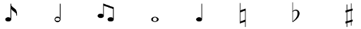
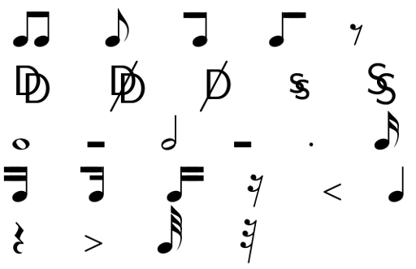
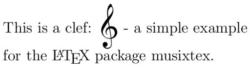
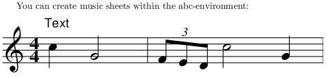
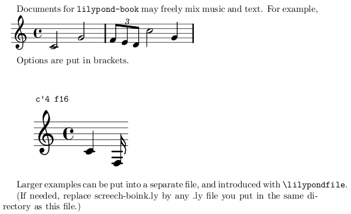

It is possible to write music with LaTeX. My girlfriend was quite surprised of this, so I decided to write a little tutorial show some examples.
Symbols
{kind=link}

\documentclass[a4paper,12pt]{article}
\usepackage{wasysym}
\begin{document}
\eighthnote ~~~ \halfnote ~~~ \twonotes ~~~ \fullnote ~~~
\quarternote ~~~ $\natural$ ~~~ $\flat$ ~~~ $\sharp$
\end{document}
The harmony package offers some additional symbols:
{kind=link}

\documentclass[a4paper,12pt]{article}
\usepackage{harmony}
\begin{document}
\noindent \AAcht ~~~ \Acht ~~~ \AchtBL ~~~ \AchtBR ~~~ \AcPa \\
\DD ~~~ \DDohne ~~~ \Dohne ~~~ \Ds ~~~ \DS \\
\Ganz ~~~ \GaPa ~~~ \Halb ~~~ \HaPa ~~~ \Pu ~~~ \Sech \\
\SechBL ~~~ \SechBl ~~~ \SechBR ~~~ \SePa ~~~ \UB ~~~ \Vier \\
\ViPa ~~~ \VM ~~~ \Zwdr ~~~ \ZwPa
\end{document}
musixtex
{kind=link}

\documentclass[a4paper,12pt]{article}
\usepackage{musixtex}
\begin{document}
\noindent This is a clef:
\begin{music}\trebleclef\end{music}
- a simple example\\
for the \LaTeX{} package musixtex.
\end{document}
ABC
Preparation
You have to have ABC installed. For Ubuntu-Users:
sudo apt-get install abcm2ps
Example
\documentclass[a4paper]{article}
\usepackage{abc}
\begin{document}
You can create music sheets within the abc-environment:
\begin{abc}[name=c-dur]
X: 1 % start of header
K: C % scale: C major
"Text"c2 G4 | (3FED c4 G2 |
\end{abc}
\end{document}
compile with
pdflatex --shell-escape myTexFile.tex
to get this:
{kind=link}

LilyPond
Preparation
Make sure that you have installed GNU LilyPond and LaTeX.
Ubuntu-Users have to type
sudo apt-get install lilypond
to install Lilypond.
Example
From the Documentation
Save the following source as lilybook.lytex:
\documentclass[a4paper]{article}
\begin{document}
Documents for \verb+lilypond-book+ may freely mix music and text.
For example,
\begin{lilypond}
\relative c' {
c2 g'2 \times 2/3 { f8 e d } c'2 g4
}
\end{lilypond}
Options are put in brackets.
\begin[fragment,quote,staffsize=26,verbatim]{lilypond}
c'4 f16
\end{lilypond}
Larger examples can be put into a separate file, and introduced
with \verb+\lilypondfile+.
\end{document}
Compile it with these commands:
lilypond-book --output=out --pdf lilybook.lytex
cd out/
pdflatex lilybook
mv lilybook.pdf ../lilybook.pdf
cd ..
rm -rf out
For simplification, you can save this as compile.sh, execute chmod +x compile.sh and now you only have to enter ./compile.sh to generate the PDF.
Output:
{kind=link}

Further Reading
If you've made some more complex examples with LaTeX, I'd be happy if you added them in the comments.